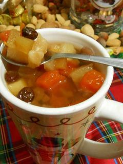

Ponche Recipe
Back to Home

Description
Guatemalan fruit ponch (ponche) recipe. Mostly for the holidays.
Ingredients
- 6 cups water
- 1 cup sugar
- 2 cinnamon sticks
- 4 cloves
- 2 star anise
- 1 apple, peeled and chopped
- 1 pear, peeled and chopped
- 1 cup pineapple chunks
- 1 cup guava, chopped
- 1/2 cup dried prunes
- 1/2 cup dried apricots
- 1/2 cup raisins
- Optional: 1/2 cup white rum or brandy
Steps
- In a large pot, combine water, sugar, cinnamon sticks, cloves, and star anise. Bring to a boil over medium heat, stirring until the sugar dissolves.
- Add the chopped apple, pear, pineapple chunks, guava, dried prunes, dried apricots, and raisins to the pot. Reduce heat to low and let it simmer for about 30-40 minutes, or until the fruits are tender and the flavors are well combined.
- If desired, stir in the white rum or brandy for an extra kick. Simmer for an additional 5 minutes.
- Remove from heat and let the ponche cool slightly before serving. Ladle into cups or mugs, ensuring each serving has a good mix of fruit and liquid. Enjoy warm!